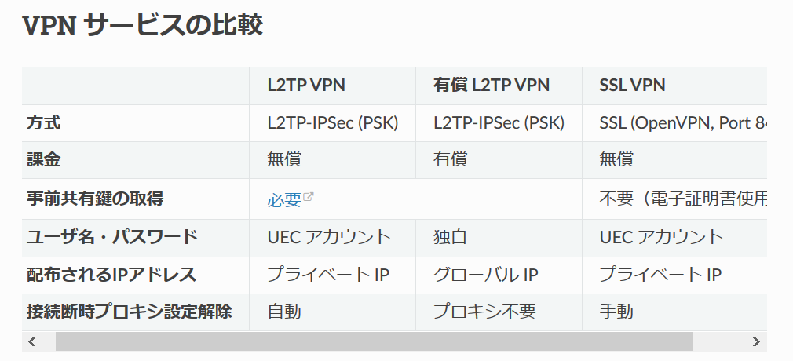

Lunatic電通生もっちゃんの部屋
STEP 5 VPN (Virtual Private Network) を設定する
まず、「VPNとはなんぞや？」という人にざっくりと。VPN接続は「学外」から「仮想的に学内で接続しているように接続する」方法です。これをすることで、毎回Step2のようなことをしなくて済みます。（ただし、ごくまれにVPNがエラーを起こしたり、共有鍵の変更などでSSHは使用します。）
また、「事前共有鍵」や「電子証明書」という単語がでてきますが、必修科目「コンピュータリテラシ」の授業内容ででてくるので今回は説明を省きます。
それでは、VPNの設定を行っていきます。情報基盤センターの記事はこちらから。
引用：情報基盤センターHP実はVPNには2通りの設定があります。「L2TP VPN」と「SSL VPN」です。特にこだわりが無い場合、「L2TP VPN」を選択しましょう。（毎年事前共有鍵の設定変更が必要ですが、プロキシ設定を自動でしてくれるので便利です。） （SSL VPNはアイコンから「信号機」と呼ばれたりします」）
L2TP VPN を設定したい方はここをクリック
SSL VPN を設定したい方はここをクリック
Next -> STEP 6 メールを設定する